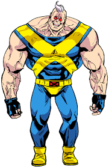

Nyújtózol egy nagyot az ágyon és felkelsz. Szép napnak ígérkezik a mai. Bekapcsolod kedvenc zenédet nagyapád régi magnóján...
- Mi ez?! - csodálkozol megrökönyödve. - Ez nem az én zeném! Mi jön ebből a gépből?!
Kipattansz az ágyból, mert egyre furcsább, baljós érzés uralkodik el rajtad. Belenézel a tükörbe.
-Jaj, ne már! - kiáltasz fel elgyötörten. - Ez a rohadt Battle Beetle már megint elvarázsolt álmomban!
Utálod, amikor ezt csinálja. Ennek véget kell vetni mielőtt identitászavar miatt begyógyszereznek. Igen, le kell számolni Battle Beetle-lel! Akkor is, ha ezer Big Bug védi! Rögtön ki is ugrasz az ágyból és lerobogsz az utcára.
Amikor azonban kiérsz, látod, hogy ezúttal nemcsak téged varázsolt el Battle Beetle, hanem az egész koszos kisvárost, ahol élsz. Furcsa, brutális világ vesz körül. Ellenséges alakok, akikből több hasonló is van. Úgy látszik, Battle Beetle mindenkit megbűvölt, de hamar kifogyott az ötletből.
Meg kell találnod mindenképpen Battle Beetle-t, hogy végetvess ennek a brutális életstílusnak, amibe belekényszerítette ismerőseidet. De előtte:
Válaszd ki, kivé varázsolt Battle Beetle!
